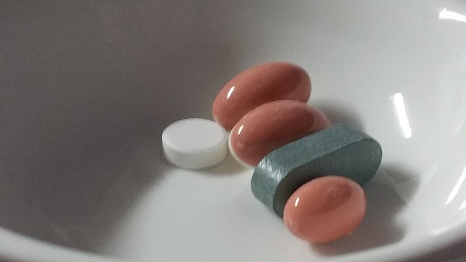
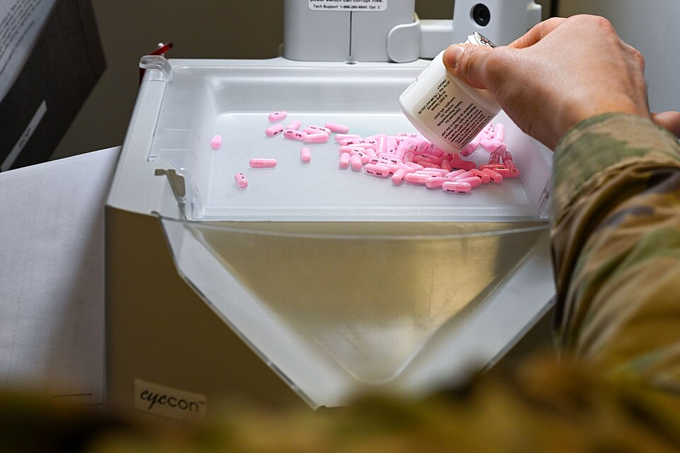

Your neighborhood guide to understanding and using medicines safely
Welcome, Neighbor!
The Westcliff Community Health Board is a volunteer-run notice board for our
local neighborhood. Every month we publish plain-language health information,
and this month's theme is medicines — what they are, how they
help us, and how to use them responsibly at home.
A medication (also called
a medicine or pharmaceutical drug) is a substance used to diagnose, cure, treat,
or prevent disease. From the aspirin in your cabinet to the vaccines at your local
clinic, medicines are one of the most important tools of modern health care.

Everyday medicines come in many forms — tablets, capsules, syrups and creams.
(Photo: Wikimedia Commons)
What You'll Find on This Site
Plain-language explanations of how common medicines work
A quick-reference table of everyday over-the-counter medicines
Safety tips for storing and taking medicines at home
Trusted links for further reading and research
This Month's Community Notices
Free blood-pressure checks at the community center — every Saturday, 9 AM–12 PM.
Medicine take-back day: bring expired medicines to the local pharmacy on the first Sunday of the month.
Flu-shot clinic opens next month — seniors and children get priority booking.
Ask-a-Pharmacist evening: bring your questions, no appointment needed.

Your local pharmacist is the most accessible medicines expert in the
neighborhood — never hesitate to ask them questions. (Photo: U.S. Air Force / Wikimedia Commons)
Golden Rules of Medicine Safety
Medicines help millions of people every day, but they only work well when used
correctly. Our community pharmacists recommend these simple habits:
Always read the label and follow the stated dose — more is not better.
Keep all medicines out of the reach of children and pets.
Never share prescription medicines with anyone else.
Check expiry dates twice a year and return old medicines to a pharmacy.
Tell your doctor or pharmacist about everything you take, including vitamins and herbal remedies.
Please note: This site is a student project for learning HTML and
shares general information only. It is not medical advice. Always talk to a doctor
or pharmacist about your own health and medicines.
Learn More
Ready to dig deeper? Visit our
Medicines Guide for a friendly tour of the most
common types of medicines, or explore these trusted resources: